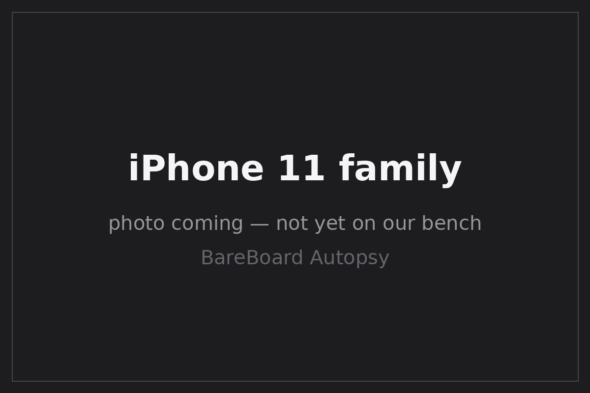

BareBoard Autopsy Report · Mobile Phones
iPhone 11 / 11 Pro / 11 Pro Max Confirmed
Apple's A13 generation — announced September 10, 2019 and released September 20, 2019 Wikipedia. Teardowns of the base iPhone 11 document the A13 (APL1W85), Intel baseband parts, and the Apple U1 ultra-wideband chip Likely iFixit teardown. FCC IDs: BCG-E3309A (11), BCG-E3305A (11 Pro), BCG-E3306A (11 Pro Max) Confirmed AT&T HAC device list (PDF). We have never owned, opened, booted, probed, tested, or disassembled any iPhone 11-family device.

What is this thing?
The iPhone 11 family is Apple's 2019 flagship line: the iPhone 11 (6.1-inch LCD, dual camera), the iPhone 11 Pro (5.8-inch OLED, triple camera), and the iPhone 11 Pro Max (6.5-inch OLED, triple camera) — all on the Apple A13 Bionic Wikipedia Wikipedia. The generation introduced the U1 ultra-wideband chip for spatial awareness and moved the modem supply fully to Intel Likely iFixit teardown.
Timeline
- 2019-09-10 — iPhone 11 family announced Wikipedia.
- 2019-09-20 — Released Wikipedia.
- 2019-09-23 — Teardowns document the base iPhone 11: A13 (APL1W85), Intel 9960 P10PSM, Intel P10 406, U1 Likely iFixit AppleInsider.
- 2019-09-25 — Base iPhone 11 internal-photo exhibit reportedly released in FCC records Likely; Pro exhibit coverage unreviewed.
- 2026-09-27 — This report published from public records; no unit on our bench.
Outside
B Face ID notch; no home button Wikipedia
C Dual camera (11) / triple camera (Pro, Pro Max) in square module Wikipedia
D Glass front and back; aluminum (11) / stainless steel (Pro) frame
E Lightning connector, nano-SIM + eSIM
Board
Public teardowns of the base iPhone 11 show a stacked logic board with the Apple A13 (APL1W85), SK Hynix LPDDR4X, Intel modem parts (9960 P10PSM, P10 406), the Apple U1 chip, an Apple/Murata wireless module (339S00647), and a Cirrus Logic audio codec (338S00509) Likely iFixit teardown.
Chips (base iPhone 11 teardown evidence)
| Ref | Marking / identity | Role | Confidence | Dig deeper |
|---|---|---|---|---|
| SoC | Apple A13 — APL1W85 | Applications processor | Likely | iFixit teardown — no public datasheet (Apple custom silicon) |
| RAM | SK Hynix LPDDR4X; 4 GB | Working memory | Likely | iFixit teardown; capacity Likely only — no public datasheet claimed |
| BB | Intel 9960 P10PSM | LTE baseband modem | Likely | iFixit teardown — no public datasheet located |
| RF | Intel P10 406 | RF transceiver | Likely | iFixit teardown — no public datasheet located |
| UWB | Apple U1 (exact marking not reliably reported) | Ultra-wideband spatial-awareness chip | Likely | iFixit teardown — marking not asserted |
| Wi-Fi/BT | Apple/Murata 339S00647 | Wireless module | Likely | iFixit teardown — no public datasheet located |
| Audio | Cirrus Logic 338S00509 | Audio codec | Likely | iFixit teardown — no public datasheet located |
FCC
The FCC ID mapping is BCG-E3309A → iPhone 11, BCG-E3305A → iPhone 11 Pro, BCG-E3306A → iPhone 11 Pro Max Confirmed AT&T HAC device list (PDF). The base iPhone 11 internal-photo exhibit was reportedly released on 2019-09-25 Likely; Pro and Pro Max exhibit coverage has not been separately reviewed, so we claim nothing about it.
Debug / service modes
iPhones expose DFU and recovery/diagnostic states that Apple documents for restore and service workflows at a high level. We describe these only as publicly documented device states. We have never entered DFU on this model, we publish no exploit chain, no boot-ROM procedure, no authentication defeat, and no instructions for bypassing any lock. We listen; we don't knock.
Public findings & what we didn't do
- ✅ Mapped all three FCC IDs from the carrier HAC filing AT&T (PDF).
- ✅ Assembled the base-iPhone-11 teardown chip table iFixit.
- ✅ Kept base-11 evidence off the Pro/Pro Max; kept the 4 GB RAM figure at Likely; did not assert a U1 marking.
- ❌ We have not opened, booted, probed, or photographed any iPhone 11-family device ourselves.
- ❌ We have no verified board evidence for the 11 Pro or 11 Pro Max.
- ❌ We have not measured power, captured a boot log, or entered DFU on this model.
By the numbers
| Metric | Value | Source |
|---|---|---|
| Display | 6.1″ 828×1792 LCD (11); 5.8″/6.5″ OLED (Pro/Pro Max) | Wikipedia |
| SoC / RAM | Apple A13 (APL1W85); 4 GB LPDDR4X | Likely iFixit |
| Cameras | Dual 12 MP (11); triple 12 MP (Pro/Pro Max) | Wikipedia |
| FCC IDs | BCG-E3309A (11); BCG-E3305A (Pro); BCG-E3306A (Pro Max) | Confirmed AT&T (PDF) |
Glossary
| APL1W85 | Apple's internal part number for the A13 package. |
| U1 | Apple's ultra-wideband chip for precise spatial awareness (e.g., directional AirDrop). |
| HAC | Hearing-aid compatibility — the carrier filing that maps these FCC IDs to models. |
| PoP | Package-on-package — RAM stacked atop the SoC package. |
Sources & confidence
- AT&T — previously available HAC-compliant devices (PDF) — FCC ID ↔ model mapping (primary carrier record).
- iFixit — iPhone 11 teardown (secondary, teardown-backed).
- AppleInsider — iPhone 11 teardown analysis (secondary).
- Manuals.plus — iPhone 11 documentation mirror (secondary).
- iPhone 11 — Wikipedia (secondary).
- iPhone 11 Pro — Wikipedia (secondary).
| Claim | Confidence | Basis |
|---|---|---|
| FCC IDs BCG-E3309A / BCG-E3305A / BCG-E3306A ↔ models | Confirmed | Carrier HAC filing (primary record) |
| A13 APL1W85, Intel 9960 P10PSM / P10 406, U1, 339S00647, 338S00509 | Likely | iFixit teardown of base iPhone 11; die-level verification awaits the bench |
| 4 GB RAM | Likely | Thinner evidence than the part identities — kept at Likely |
| 11 Pro / 11 Pro Max board contents | Unknown | No separate teardown evidence attached |
| Our own board photos, revisions, measurements | Unknown | Awaits the bench |
Legal note
This report is a transformative educational summary of publicly available records. Product names and marks belong to their owners. We describe only publicly documented device states at a high level; we publish no exploit chains, boot-ROM procedures, lock bypasses, authentication defeats, firmware-extraction procedures, or unsafe service instructions. Our posture: we listen, we don't knock.
Related reports
- iPhone 6s / 6s Plus — four generations earlier
- iPhone 6 / 6 Plus — five generations earlier
- iPhone 5s — six generations earlier